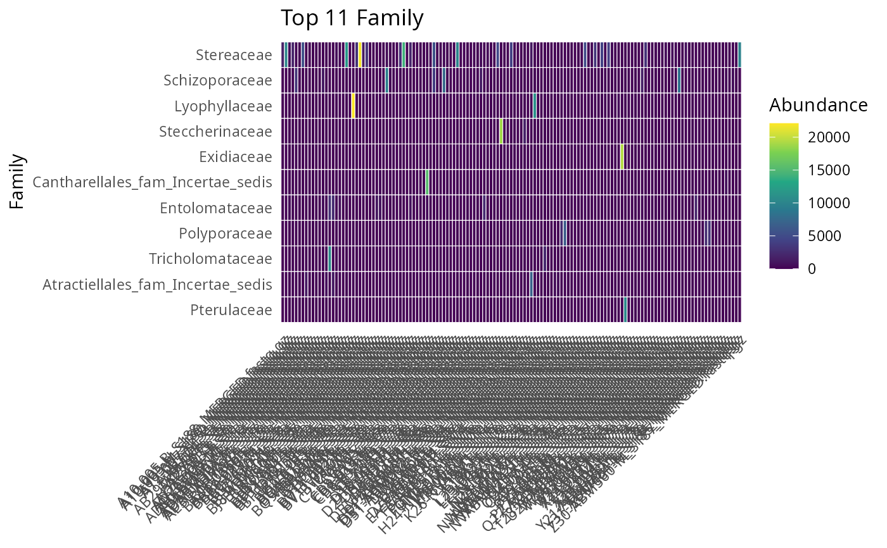
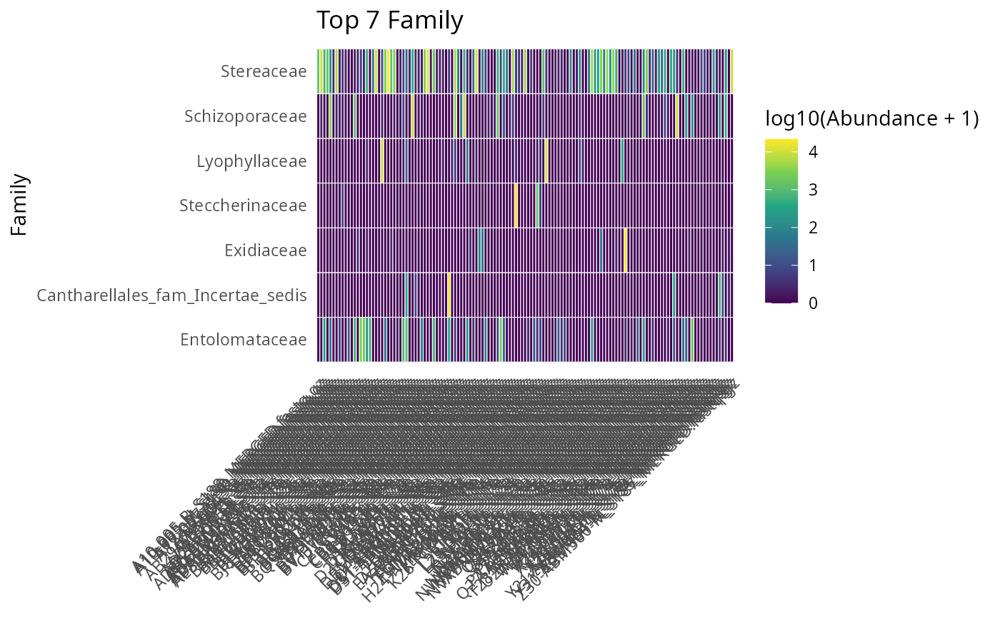

Heatmap of the top-N most abundant taxa across samples
Source:R/plot_taxa_heatmap_pq.R
plot_taxa_heatmap_pq.Rd
Draw a ggplot2 heatmap of the n_top most abundant taxa (by total
read count) across the samples of a phyloseq object. The x-axis is
the sample, the y-axis is the taxon (with the chosen taxa_rank
name), and the fill is either the raw abundance (default) or the
log10-transformed abundance (log10 = TRUE). Useful for a quick
survey of the dominant taxa and to spot per-sample anomalies.
Usage
plot_taxa_heatmap_pq(
physeq,
n_top = 20,
taxa_rank = "Family",
log10 = FALSE,
na_rm = TRUE,
fill_scale = NULL
)Arguments
- physeq
(required) A phyloseq::phyloseq object.
- n_top
(integer, default 20) Number of top taxa (by total read count across samples) to display. Must be >= 1.
- taxa_rank
(character, default "Family") The taxonomic rank used to label the y-axis. Must be a column in
phyloseq::tax_table().- log10
(logical, default FALSE) If TRUE, the cell value is log10(
Abundance + 1) — useful when the abundance distribution is heavily right-skewed.- na_rm
(logical, default TRUE) Drop samples with NA in the abundance before plotting.
- fill_scale
(function, default NULL) Optional ggplot2 fill scale applied to the heatmap. If NULL, uses
ggplot2::scale_fill_viridis_c()for continuous fills. Ignored whenlog10 = FALSEand the user wants the default.
Value
A ggplot2::ggplot object.
Examples
# \donttest{
data(data_fungi_mini, package = "MiscMetabar")
plot_taxa_heatmap_pq(data_fungi_mini, n_top = 15, taxa_rank = "Family")

plot_taxa_heatmap_pq(data_fungi_mini, n_top = 10, log10 = TRUE)

# }